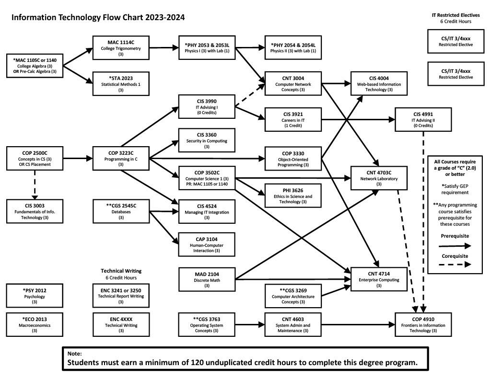

About the Major
The Information Technology (IT) program at UCF focuses on applying computing technologies to solve real-world problems.
Students gain skills in networking, cybersecurity, software development, and IT project management.
Graduates secure roles in cybersecurity, IT consulting, and software development at top companies and government agencies.
IT Program Flowchart

Major-Specific Classes
Class 1: CGS 2545C - Database Concepts
This course introduces the fundamentals of database systems, including design, development, and SQL.
Class 2: CGS 3269 - Computer Architecture Concepts
This course explores the structure and function of computer systems, focusing on memory, processors, and instruction sets.
Class 3: CGS 3763 - Operating Systems Concepts
This course covers how operating systems manage hardware and software resources including processes, memory, and file systems.
Online Resources |
Campus Resources |